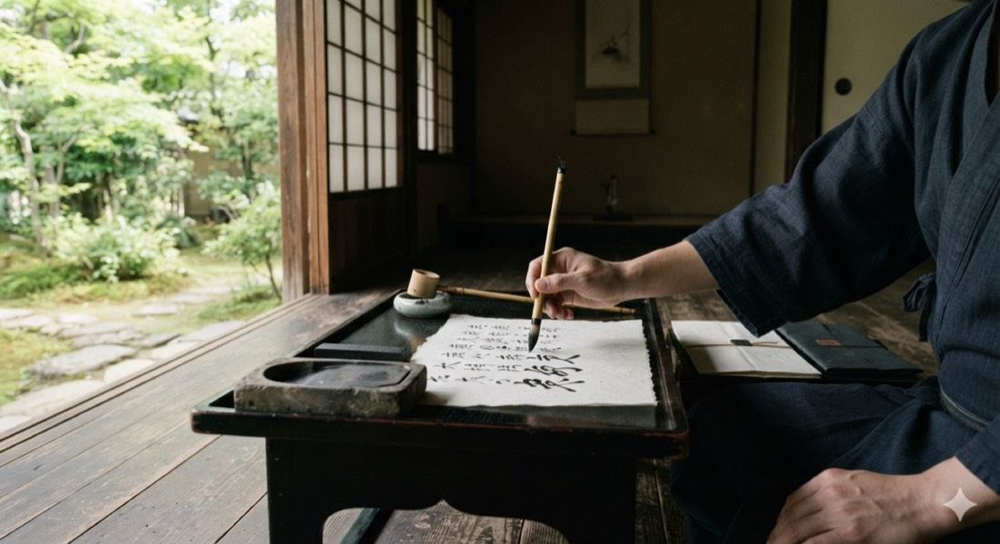
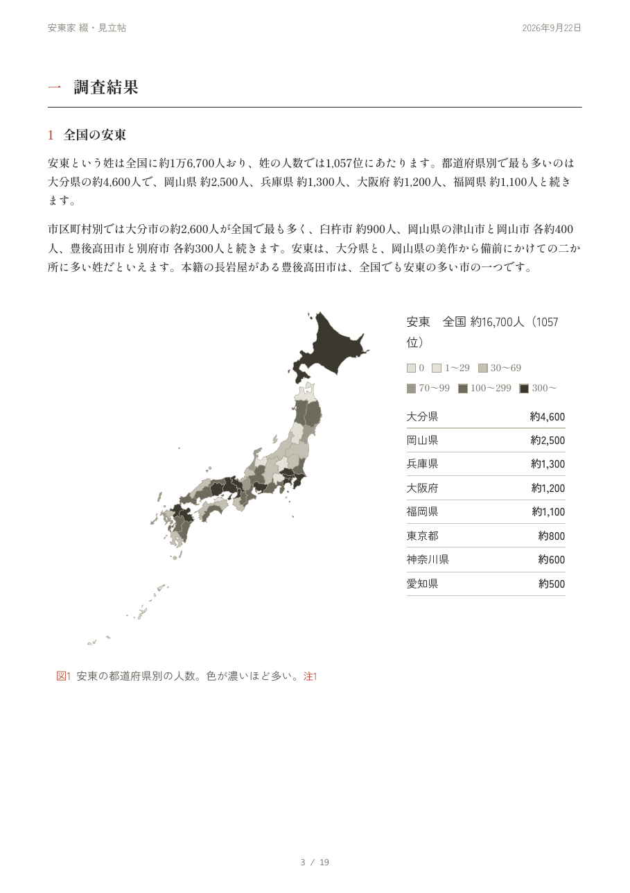
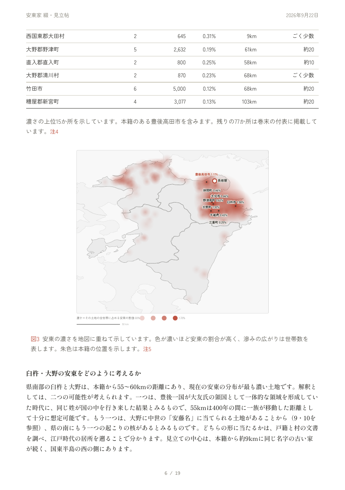
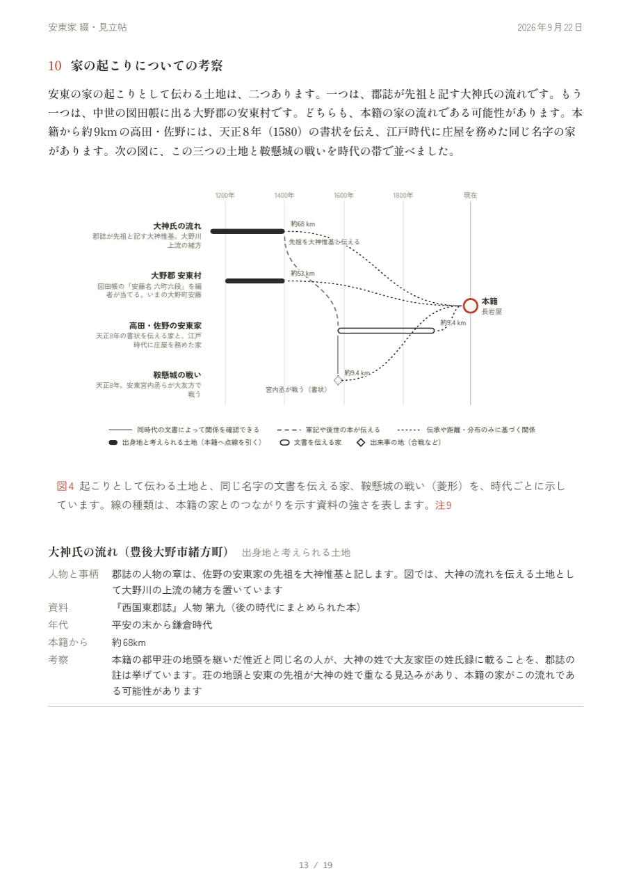
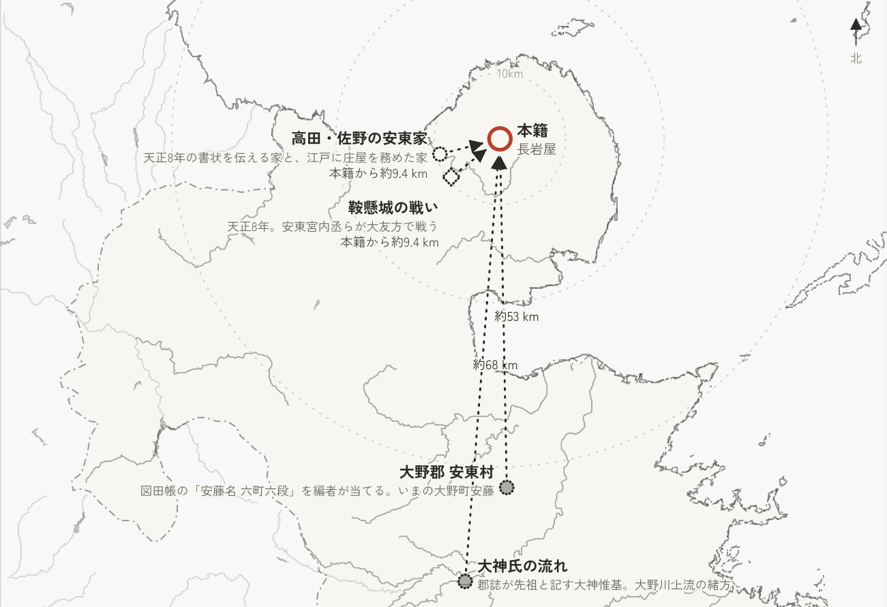
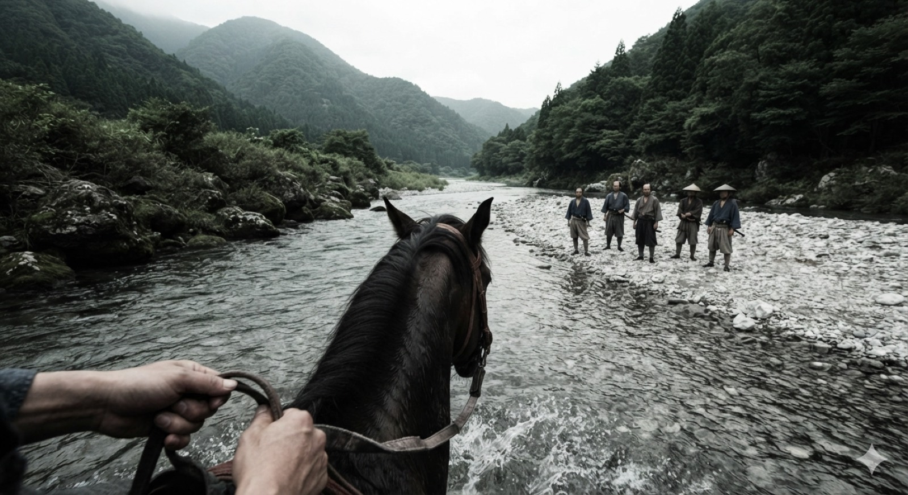
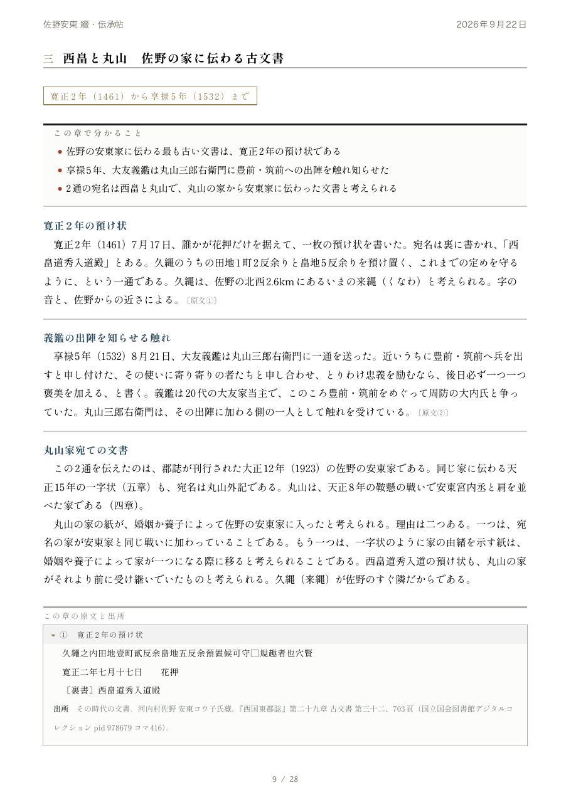
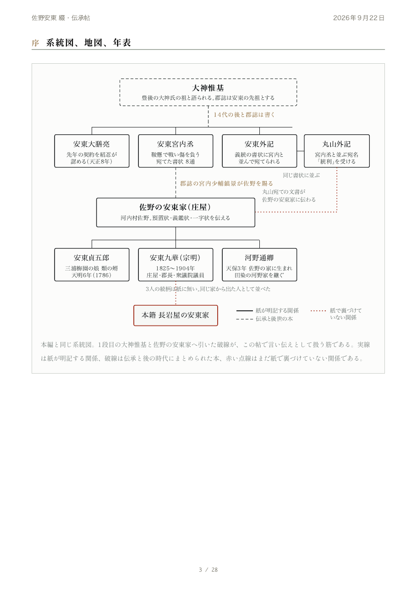
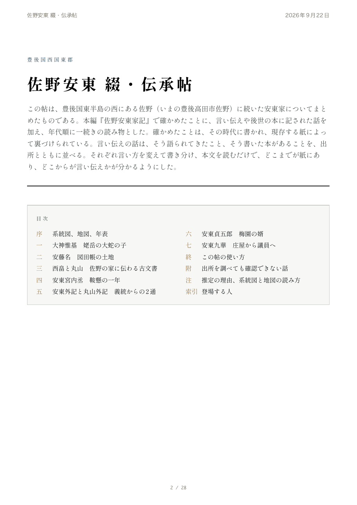

綴つづり｜家系調査綴・一葉／綴・見立帖
始めるのに必要なのは、お名字と、明治ごろ（1868〜1912年）の本籍地の村の二つだけです。ご先祖が暮らした村を、
古い記録からたどれます

家に伝わる古い書き物と土地に残る記録を、一つの読み物にまとめてお届けします。なお、掲載している絵は生成画像です。
家に伝わる古い書き物は、代を重ねるうちに本家に集まります。一方、土地に残った記録は、どの家からでもたどれます。村の地誌や郷土史、古文書、古い地図を調べ、同じお名字の家がどのように記されているかを、一続きの読み物にまとめます。まずは一枚から始め、次に一冊へ進めます。
こんな方に
「戸籍でたどれた一番古いご先祖より前のことが知りたい」
「本籍地の村が、どのような村だったのか知りたい」
「家に伝わる話が、記録に残っているか確かめたい」
調べると分かること
どの土地から続く家なのか同じお名字の家が全国のどこに何軒あるかを、県、町、字（あざ）の順に確認できます。本籍地から何キロ離れた場所に、同じお名字の家が何軒あるかまで掲載します。
江戸時代の村で、どのような暮らしだったのか村の戸数と産物、領主、神社や寺の名前が分かります。検地帳や村の証文に同じお名字が記載されていれば、その人物の名前と年代も確認できます。
もっと古い記録に、同じお名字があるか戦国時代の書状や軍記に、そのお名字が見える家もあります。そうした記録が残っている場合は、誰がどの戦いに参加し、どのような行動を取ったかまで分かります。
見立帖に入る図（見本から4枚）

図1 全国のどこに多いか県ごとの人数を、色の濃さで示します。

図3 本籍地の周辺で多い土地色が濃いほど割合が高く、にじみが広いほど世帯数が多い土地です。

図4 お名字の起こりと同じお名字の家起源とされる土地、古い文書が残る家、戦いの記録を、時代順に帯で示します。

図5 本籍地からの距離図4の土地を地図に置いた図です。輪は本籍地からの距離を表します。
綴つづり｜家系調査綴・伝承帖
見立帖で分かったことを、年代順に一続きの物語としてまとめます。家のあゆみを、一冊の読み物に
古い記録で確かめられたことに、土地で語り継がれてきた話と、ご家族からの聞き書きを重ねます。どこまでが古い記録で、どこからが言い伝えなのかが、読んでいて自然に分かります。

場面の絵記録にある場面を描いた、本文中の絵です（生成画像）。

古い手紙を読み解く章章の初めに、この章で分かることを示します。

名前のつながりの図記録に出てきた名前を、線で結んだ図です。

表紙をめくった1頁目題名と、この帖の成り立ち、目次を載せた頁です。
三つのお約束
先に見立帖をご覧いただけます記録が残っている時代は、家によって異なります。見立帖で、家系の記録がどの時代まで残っているかを確認してから、先へ進むかどうかをお決めいただけます。
調べた記録は、すべてお手元に残りますお名字が記載されているかどうかにかかわらず、調べた記録をすべて、本の名前と所蔵先を添えて一覧にします。ご家族が続きを調べることもできます。
どの記録にある話かが、いつでも分かりますその時代の記録に書かれていることと、後世に語られてきたことは、書き分けているため、区別して読めます。読み方に迷う字は、字の形のまま載せ、考えられる読みを添えます。
◎その時代の記録に書かれている○ほかの記録と照らし合わせて決めた△読みが二つある（もう一つの読みも添えます）
戸籍で家系図をつくるこのサービスもお選びいただけます
相続などで集めた除籍謄本をお持ちの方に向けたサービスです。除籍謄本の一枚一枚をもとに、A3の厚紙に印刷した系図と人物台帳、家のあゆみ、いのちの記録を作成します。原本は順に綴じ、箱に入れてお返しします。
100,000円税込。除籍謄本6綴りまで。7綴り目以降は、1綴りにつき5,000円を加算します。完成までは2か月が目安です。
進み方
お名字と村をお知らせください明治ごろ（1868〜1912年）の本籍地は、大字まで分かれば十分です。
綴・一葉が届きますお名字がどの土地に多いか、本籍地の村がどのような場所だったかを、A4用紙の両面で確認できます。
綴・見立帖へ一枚をご覧になってから、先へ進むかどうかをお考えいただけます。
綴・伝承帖へ家系の記録がどの時代まで残っているかをご確認のうえ、お申し込みいただけます。